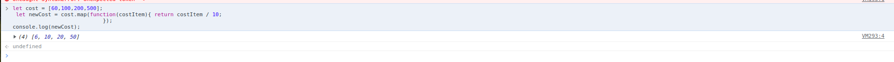
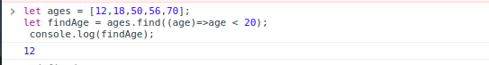

Write the Difference between Map(),Filter(),forEach() and Find()?
map method receives a function as a parameter. Then it applies it on each element and returns an entirely new array populated with the results of calling the provided function.
forEach() is used to execute the same code on every element in an array but does not change the array and it returns undefined.
filter() checks every element in an array to see if it meets a certain criteria and returns a new array with the elements that return truthy for the criteria.
find() is a search function like the previous but they differ in one small detail — this function returns only one match in an array. If in an array is more than one result, the function will return the first that has matched.
| map() | forEach() | Filter() | Find() | |
|---|---|---|---|---|
| 1 | map method receives a function as a parameter. Then it applies it on each element and returns an entirely new array populated with the results of calling the provided function. |
forEach() is used to execute the same code on every element in an array but does not change the array and it returns undefined. |
filter()checks every element in an array to see if it meets a certain criteria and returns a new array with the elements that return truthy for the criteria. |
find()is a search function like the previous but they differ in one small detail this function returns only one match in an array. If in an array is more than one result, the function will return the first that has matched. |
| 2 |
let cost = [60,100,200,500];
|
let foods = ['mango','rice','banana','tomato'];
|
let ages = [12,18,50,56,70];
|
let ages = [12,18,50,56,70];
|
| 3 |  |  |
 |
 |
Difference Between Local Storage, Session Storage, And Cookies
Local Storageread-only interface property provides access to the Document’s local storage object, the stored data is stored across browser sessions.
Session Storage can be accessed using the sessionStorage read-only property. The difference between sessionStorage and localStorage is that localStorage data does not expire, whereas sessionStorage data is cleared when the page session ends.
CookiesThe term “cookie” refers to just the textual information about a website. In order to recognize you and show you results according to your preferences, this website saves some information in your local system when you visit a particular website. The history of the internet has long been marked by the use of cookies.
| Local Storage | Session Storage | Cookies | |
|---|---|---|---|
| 1 | The storage capacity of local storage is 5MB/10MB |
The storage capacity of session storage is 5MB |
The storage capacity of Cookies is 4KB |
| 2 | The client can only read local storage | The client can only read local storage | Both clients and servers can read and write the cookies |
| 3 | There is no transfer of data to the server | There is no transfer of data to the server | Data transfer to the server is exist |
| 4 | Has SSL Support | Has no SSL support | Has no SSL support |
What is Event Loop?how does it works?
JavaScript has a runtime model based on an event loop, which is responsible for executing the code, collecting and processing events,
and executing queued sub-tasks. This model is quite different from models in other languages like C and Java.
The event loop is the secret behind JavaScript’s asynchronous programming. JS executes all operations on a single thread, but using a few smart data structures,
it gives us the illusion of multi-threading. Let’s take a look at what happens on the back-end.
Whenever an async function is called, it is sent to a browser API. These are APIs built into the browser. Based on the command received from the call stack, the API starts its own single-threaded operation.
Where does it send the operation? The event queue. Hence, we have a cyclic system for running async operations in JavaScript. The language itself is single-threaded, but the browser APIs act as separate threads.
The event loop facilitates this process; it constantly checks whether or not the call stack is empty. If it is empty, new functions are added from the event queue. If it is not, then the current function call is processed.
Comments Sharewhat is quizTimer() ? how does it works in noChange.js file?
quizTimer() basically used for handle the timer.here we pass one paremeter which name is dismiss.
firstly we check if condition and pass clearInterval() which is generate from index.js file.here we create another funtion which is setInterval().
here we get id,minute,modulus value.and using ternary operator we find min,countsec.
we create a HTML using `` and check count > 60 then check count % 2 === 0 then change text-color class add/remove from above HTML element.
what is chooseQuiz() ? how does it works in noChange.js file?
chooseQuiz() basically used for select or choose quiz answer.here we pass two paremeter which name is index and givenAns.
here we used find() to get isExist value.then we use for of loop and check inside exist.id === quiz.id.if true then we splice given answer and break for get out from loop.
else we push answer.after that displayAnswers() is working for givenanser show.